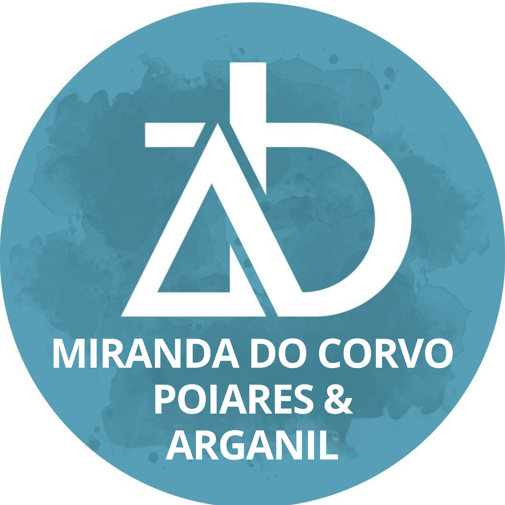

Assembleia de Deus · Miranda do Corvo, Poiares & Arganil
Curso de preparação
para o batismo
13 aulas · Parte I: Doutrina · Parte II: Integração
"Ide, portanto, fazei discípulos de todas as nações, baptizando-os em nome do Pai, e do Filho, e do Espírito Santo."Mateus 28:19